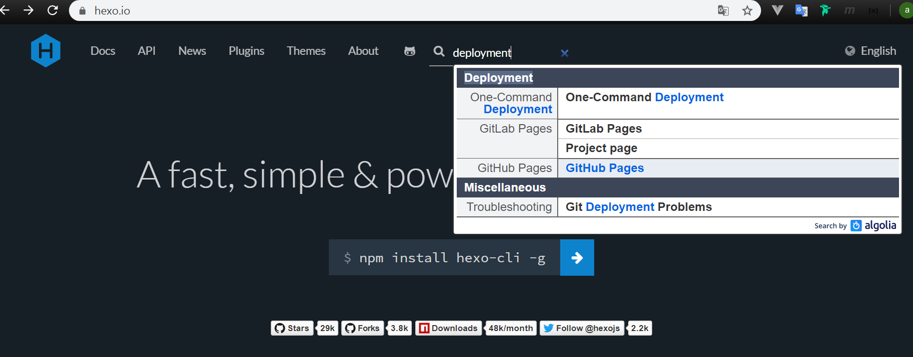
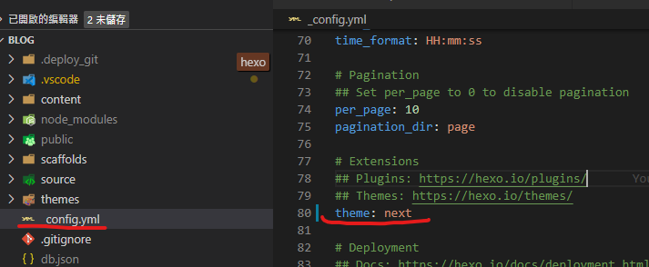

看了好幾篇 hexo 的文章，加上自己也已經很習慣使用 VScode 作為日常開發
尤其是 markdown 文件的撰寫便利，想想還是自己架個小小的 blog 紀錄日常心得吧
為甚麼用 Hexo
對我而言 hexo 有幾項優點：
- 安裝快速
- 靜態 HTML：不需後端伺服器，所以可以架在自己的 NAS 上面
- 更換佈景主題方便，且資源眾多，雖說重點只是記錄知識，但是偶爾換換主題也是挺賞心悅目的一件事
- 採用 markdown 撰寫，而且 VSCode 的支援度頗高
- 容易客製調整，基本上就是 HTML 與 JavaScript，如果哪天想要改了也很方便
- 有多種佈署外掛，包含 github、heroku 等空間，也有支援 FTP/SFTP 的方式來佈署
佈署相關可參照官方文件：https://hexo.io/docs/deployment.html
基本操作
當然是先查看一下說明
1 | hexo --help |
基本的指令及描述如果不太清楚，就直接去官方網站看吧
| Command | Describe |
|---|---|
| clean | Remove generated files and cache. |
| config | Get or set configurations. |
| deploy | Deploy your website. |
| generate | Generate static files. |
| help | Get help on a command. |
| init | Create a new Hexo folder. |
| list | List the information of the site |
| migrate | Migrate your site from other system to Hexo. |
| new | Create a new post. |
| publish | Moves a draft post from _drafts to _posts folder. |
| render | Render files with renderer plugins. |
| server | Start the server. |
| version | Display version information. |
這邊我較常用到的是
建立文章
1 | hexo new "hello~world!" |
啟動網站預覽
預設會在localhost:4000，同時修改文章的話還會有 browserSync
1 | hexo server |
編譯部落格為靜態網頁
透過指令將部落格文章編譯成靜態網頁便於佈署，也可以輸入縮寫hexo g
1 | hexo generate |
刪除快取及產生出來的檔案
需要刪除無效的標籤索引時可以透過指令刪除產生出來的檔案及快取資料，下次重新產生即可
1 | hexo clean |
佈署網站
已經準備好靜態網頁資料後，剩下的就是將資料發布至伺服器上，一開始是放在 NAS，但後來想想有穩定又免錢的 github pages 幹嘛不用，於是又補了第二段，第一段 NAS 的部分看看就好囉
NAS
在我的 case 是透過 nas 作為伺服器，嘗試之後，透過 node.js 將網頁透過區域網路上傳是最簡易的做法
1 | //gulpfile.js |
github pages
首先要有一個 public 的 repository 來存放 hexo 所產生出來的靜態網頁，開一個新的 repo 即可
接著修改hexo設定檔，大致上就是設定好發布的 repo url 及 branch，另外要注意的是網站若為子目錄，也要進行設定，官方網站的文件常常改地方，所以直接截圖

說明文件，其實這邊利用的方法就是 private repository 的方式，因為比較簡單，只需要在設定檔中做下面這樣的設定，就可以方便地發布了
1 | # URL |
安裝 npm 套件
1 | npm install hexo-deployer-git --save |
利用指令發布網站
1 | hexo d -g |
接著到 repository 的設定頁面，將 github pages 打開就完成了
使用 Next Theme
使用 Hexo 也好一陣子，始終在換主題，發現了這套 Theme 看起來很舒服也很多人使用，畢竟部落格文章其實我覺得也不用太花俏，這個 Theme 在閱讀上非常舒服，那就是他了
安裝透過官網的說明，直接進入子目錄將最新檔案 clone 下來即可
1 | $ cd hexo |
如果需要更詳細的說明，請參考詳細安裝步驟
這樣子將 Theme 檔案下載完畢後，修改設定指定主題為next就好了

設定主題
因為可以設定的東西跟選項很多，我也不打算介紹，因為很多地方都解釋得很清楚，這邊提供網站參考就好，底下列出我的調整項目
Hexo 設定文件：_config.yml
主題設定文件：Themes/next/_config.yml
- 主題設定
scheme: Pisces - 主題設定
language: zh-TW - Hexo 設定
language: zh-TW
如果改完，使用 local 預覽卻發現變成阿拉伯文，記得先
hexo clean清除暫存再試一次